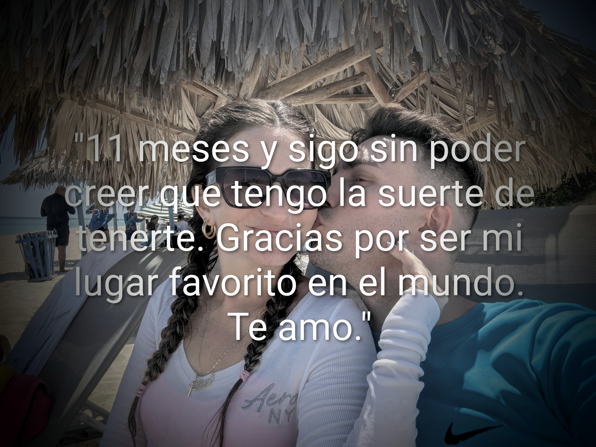

🌸 10 meses a tu lado 🌸
Diez lunas han pintado nuestro caminar,
diez abriles en caricias, diez octubres al soñar.
Contigo aprendí que el tiempo vuela cuando es feliz,
que cada día a tu lado es un nuevo descubrir.
💕
Tus risas son las estrellas de mis noches más serenas,
tus abrazos, el refugio donde el alma se encadena.
Diez meses de promesas susurradas al amanecer,
y un futuro entero esperando florecer.
🌹 Gracias por estos 10 meses, mi amor. 🌹
🌺 11 meses celebrando nuestro amor 🌺
Once lunas han danzado en nuestro firmamento,
once sueños compartidos, once latidos al viento.
Cada día contigo es un poema sin final,
una historia de amor que no deja de brillar.
✨
Tus ojos son el mapa donde quiero perderme,
tus manos, el destino donde siempre encuentro verme.
Once meses de aprendizajes y de entregas sinceras,
y un amor que se fortalece con cada primavera.
🌹 Gracias por estos 11 meses, mi vida entera. 🌹